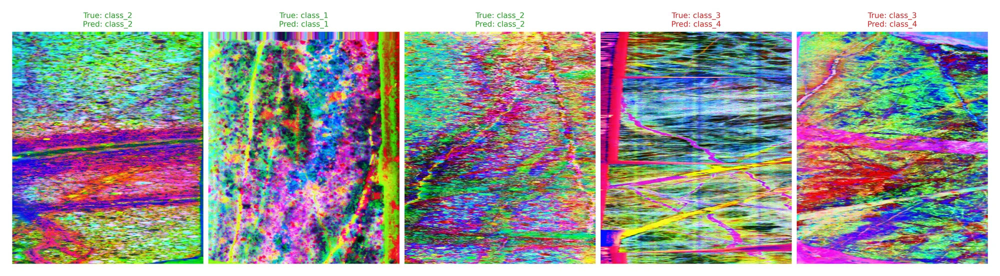
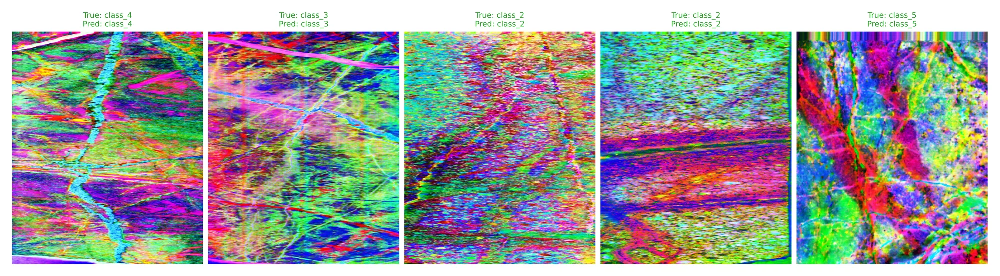
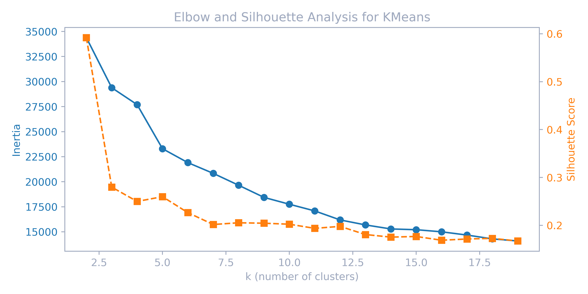
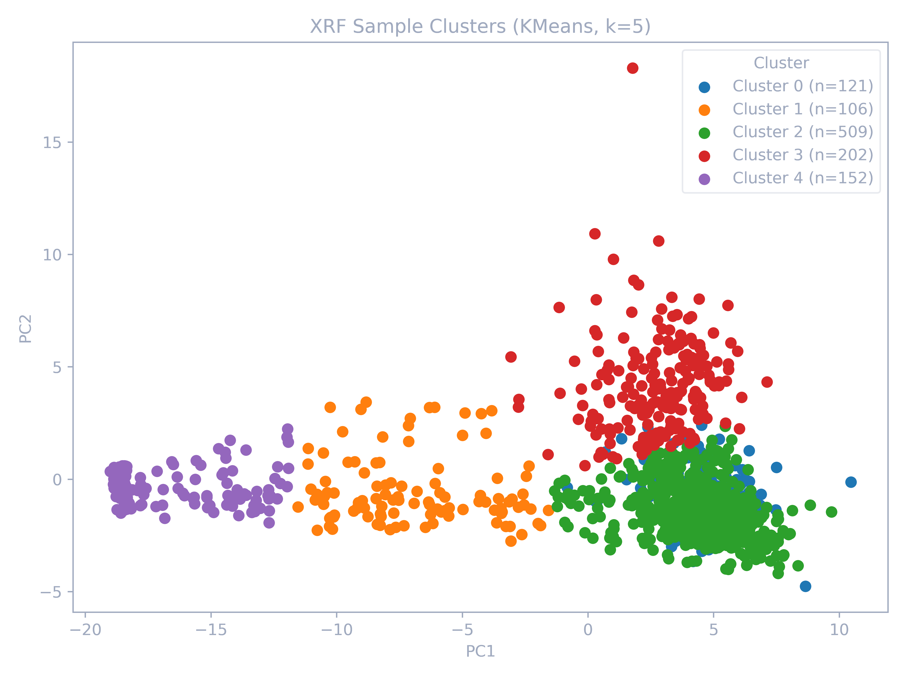
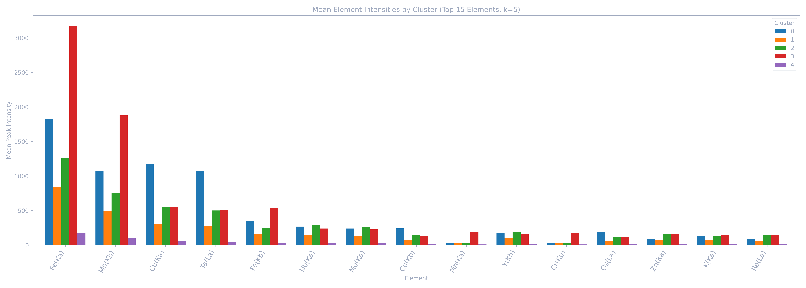
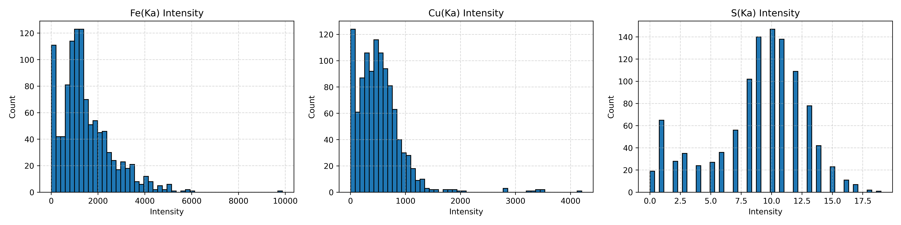

A dual-purpose machine learning framework integrating high-dimensional sensor data (Hyperspectral Imaging and X-ray Fluorescence) to automate complex classification and domain mapping tasks — achieving 90% test accuracy and demonstrating the viability of scalable AI in traditional industries.
Business Impact: Designed an end-to-end Deep Learning pipeline to automate the analysis of highly subjective, complex sensor data, achieving a 90% macro-F1 accuracy. The framework replaced weeks of manual, inconsistent human interpretation with an objective, real-time computational pipeline, proving the viability of deploying scalable AI solutions to solve critical operational bottlenecks.
Traditional data interpretation in this domain relies entirely on manual analysis by human experts — a process that is highly subjective, time-consuming, and notoriously inconsistent.
Different geologists examining the same complex drill-core sample agree on rock types only 60-70% of the time, leading to inconsistent geological maps.
Manual logging of hundreds of meters of drill core takes days to weeks, delaying critical exploration decisions and increasing operational costs significantly.
Existing approaches treat HSI and XRF as duplicate inputs, missing each method's unique strengths — HSI excels at mineral detection while XRF measures elements directly.
A dual-purpose framework that optimizes each sensor modality for its analytical strengths, then integrates them through cross-modal validation.
Radiometric correction, noise filtering, and spectral normalization of raw hyperspectral image cubes covering 288 spectral bands.
Independent Component Analysis extracts statistically independent spectral features, reducing 288 bands to meaningful geological components.
EfficientNetB0 backbone with dilated separable convolutions at 3 scales (3×3, 5×5, 7×7 receptive fields) for hierarchical geological feature capture.
Supervised 5-class rock type classification with 90% test accuracy, validated through stratified 5-fold cross-validation.
Element concentration calibration, Compton scattering normalization, and matrix effect correction for reliable elemental measurements.
Data-driven adaptive thresholds replace arbitrary cutoffs, using the 70th percentile to identify genuine chemical enrichment zones.
Unsupervised clustering identifies 5 geochemically coherent domains, validated through silhouette analysis and geological interpretation.
Unsupervised chemical domain identification with 99% supervised classification accuracy and clear mineralization signatures.
Key technical contributions that address fundamental challenges in geological machine learning.
Geological features span from tiny mineral grains to broad rock boundaries. The architecture captures patterns at three spatial scales simultaneously:
Geological datasets suffer severe class imbalance (35:684 ratio for minority to majority classes). The focal loss function addresses this:
Standard data augmentation doesn't work for geological images. MixUp creates synthetic training samples via convex combinations:
Replaces fixed concentration thresholds with adaptive, data-driven methods for mineral classification:
The complete dual-purpose multimodal framework showing the supervised HSI classification pipeline, unsupervised XRF domain identification pipeline, and their novel cross-modal integration.
Separates mixed mineral signatures
Both sensors scan the same physical rock core at different measurement points. Integration aligns them spatially so we can verify: does the Model's visual rock classification actually match the true chemical composition?
Spatial alignment of HSI & XRF logs.
Geochemical priors inform CNN predictions.
Validates lithology-domain coherence.
Rigorous evaluation on South American drill-core datasets with expert-annotated geological labels, validated through stratified cross-validation.
Five-fold cross-validation across different seeds was used to test model stability and generalization under varying geological data compositions, due to the natural variety in the samples.
This process identified Split #3 as the optimal model, improving generalization and significantly increasing Class 4 recall.




| Cluster | Domain | Notes |
|---|---|---|
| 0 | D0 | Fe-Cu |
| 1 | D1 | Background |

How the 70th percentile approach replaces arbitrary cutoffs with statistically-grounded, data-driven thresholds to classify mineralization zones as oxidic, sulfidic, or other.
The histograms below show the intensity distributions for the three key discriminating elements. Notice the right-skewed distributions characteristic of geological data— this is precisely why percentile-based thresholds outperform fixed cutoffs. The 70th percentile captures the inflection point where concentrations shift from background noise to genuine enrichment.

The table below shows the computed percentile thresholds (intensity counts) for each key element. The 70th percentile was selected as the primary classification threshold, balancing sensitivity to genuine enrichment against noise from extreme values at higher percentiles.
Cross-tabulation of geochemical clusters and mineralization types reveals systematic relationships that validate the clustering and enable exploration targeting. The table below presents the mineralization distribution across the identified geochemical domains (clusters identified by the K-Means algorithm).
A Random Forest classifier was trained on the percentile-based mineralization labels to validate whether these categories represent genuinely separable geochemical populations. The table below confirms outstanding predictive performance, validating the percentile-based approach.
The Random Forest classifier achieves 99% overall accuracy with perfect precision for sulfidic (1.00) and near-perfect for oxidic (0.95) classes. The moderate sulfidic recall (0.57) reflects the challenge of detecting rare mineralization events in highly imbalanced datasets (only 7 test samples), but the perfect precision ensures zero false positives — critical for avoiding costly targeting errors in mineral exploration.
To mathematically prove that the Model's visual predictions align with the raw chemical reality, a Chi-Square test of independence was performed.
Null Hypothesis (H₀): There is no
underlying relationship between the Model's visual lithology classification and the true
geochemical composition of the rocks.
Conclusion: The p-value (< 0.001) provides strong
evidence to reject the null hypothesis, proving that the deep learning
vision model successfully and reliably predicts the true geochemical domains.
Why perform this analysis?
The core innovation of this thesis is unifying two completely different types of data. Cross-Tabulation Analysis is the mathematical bridge that intersects the Model's visual predictions (Lithology/Rock Types from cameras) with the physical chemical reality (Geochemical Domains from X-ray scans). The six charts below explore this intersection—mapping exactly which visual rock classifications strongly correlate with the highest concentrations of target minerals (like Copper and Iron). This proves that the Model isn't just learning visual textures, but is actually identifying the underlying chemical signatures of the ore.
The integrated analysis identifies high-priority exploration targets through evaluation of lithology-cluster combinations with elevated mineralization potential.
The priority ranking balances statistical confidence with exploration importance. By calculating the mineralized percentage alongside a natural log scaling of the sample count (N), the framework prevents small, noisy clusters from dominating while limiting the influence of overly massive background domains:
This multimodal approach discovers refined targets that neither HSI nor XRF could confidently identify alone. For example, the precise intersection of Lithology_Type_3 and geochemical Cluster 0 achieves an exceptional 47.4% mineralization rate, providing actionable insights for industrial exploration.
| Target Candidates (Lithology + Domain) | Sample N | Oxidic % | Sulfidic % | Mineralized % | Priority Score |
|---|---|---|---|---|---|
| Lithology_Type_3 + Cluster 0 | 19 | 31.6% | 15.8% | 47.4% | 141.9 |
| Lithology_Type_5 + Cluster 3 | 112 | 25.0% | 2.7% | 27.7% | 130.8 |
| Lithology_Type_4 + Cluster 0 | 30 | 3.3% | 13.3% | 16.7% | 57.2 |
Robust field-testing demonstrating model generalizability across diverse geological settings.
Unlike many academic deep learning models that require expensive GPU clusters, this architecture was explicitly optimized for CPU-only inference. This enables cost-effective, real-time deployment directly at the edge or on standard industrial hardware, massively increasing operational viability for immediate use by geologists in the field.
Novel methodological contributions advancing automated geological analysis for mineral exploration.
First approach to optimize HSI for supervised lithology classification and XRF for unsupervised geochemical domain mapping separately, outperforming traditional feature fusion methods.
Statistical method replacing arbitrary concentration thresholds with adaptive, data-driven boundaries that achieve 99% classification accuracy for mineralized zones.
Novel method using unsupervised XRF chemical domains to guide and validate supervised HSI rock predictions, linking elemental and mineral classifications (Cramér's V = 0.389).
CPU-only inference pipeline deployed on the ANCORELOG platform, reducing manual interpretation time by 60% while maintaining geological accuracy for real-world mining operations.
Download the abstract for a concise summary of the methodology and results, or read the official reference letter from DMT GmbH.